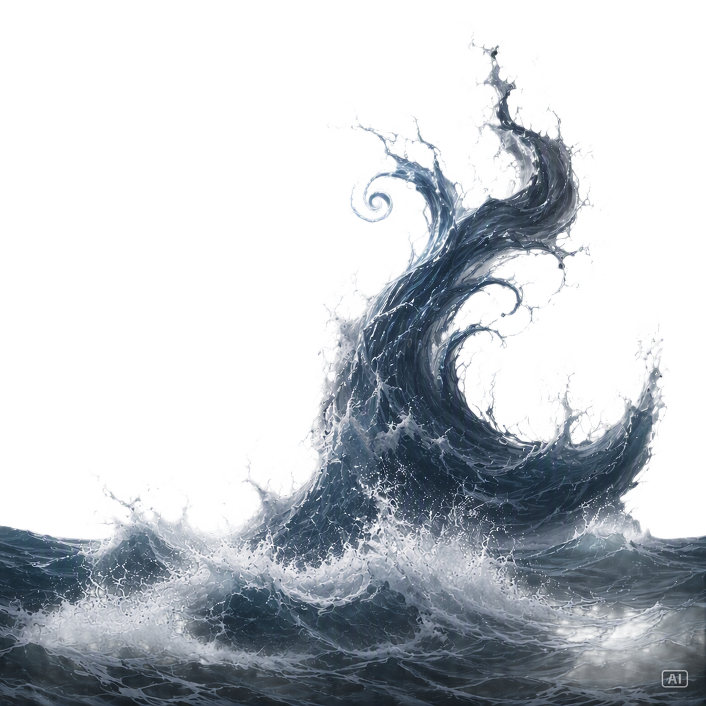
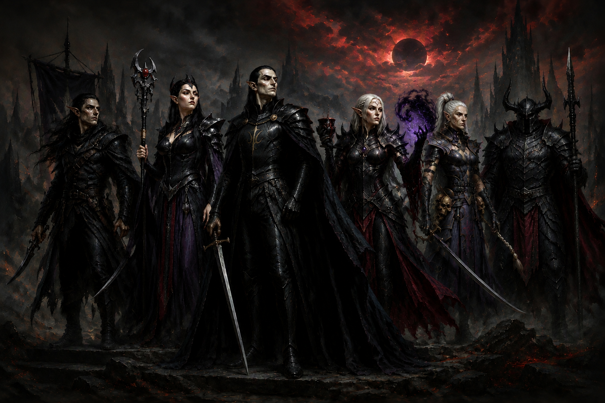
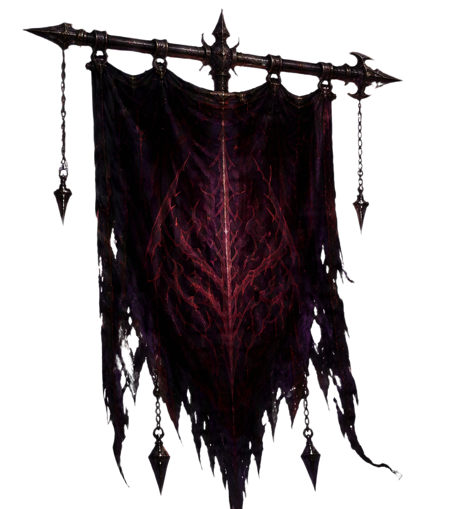
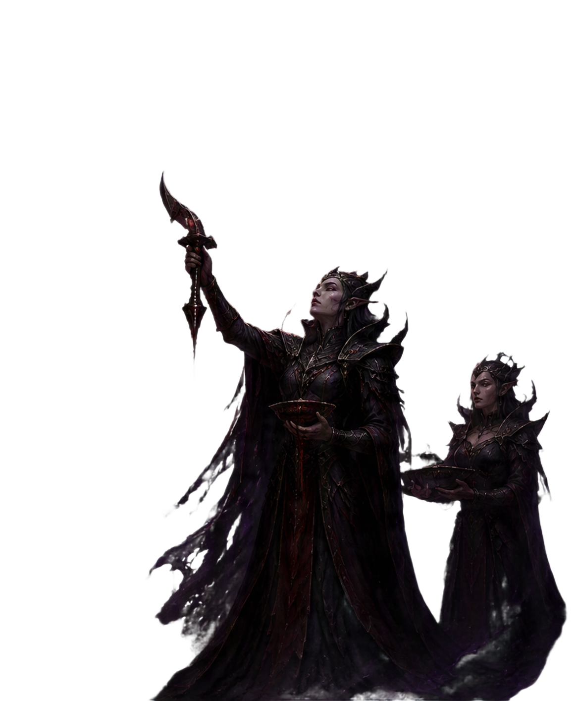
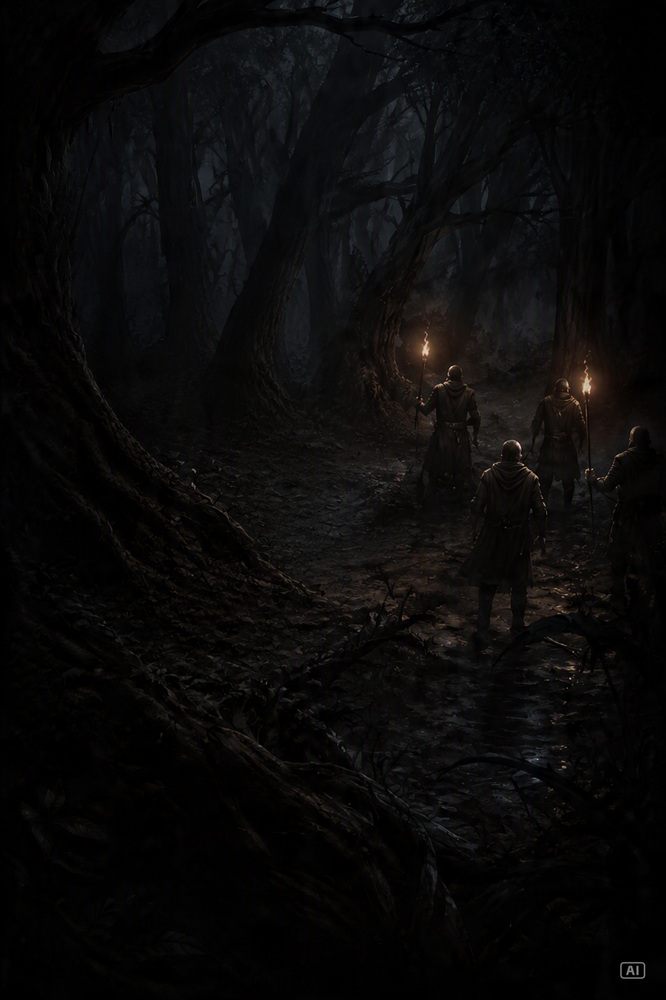

.png)
Chronique I
Le Courant Occidental
Là où les cartes s'arrêtent, les ambitions commencent. Au-delà de l'horizon, l'Ancien Monde n'est plus le même.
Explorer les horizons →Suppléments narratifs non officiels
Chroniques, campagnes et créations pour Warhammer : The Old World

Deux flottes. Une mer sans pitié. Une chasse dont personne ne sortira indemne.
Au large des côtes de l'Ancien Monde, une guerre oubliée ressurgit des profondeurs. Entre tempêtes, trahisons et batailles navales, une flotte devra choisir : poursuivre sa proie… ou disparaître avec elle.
Découvrir la chroniqueLes Archives de l'Ancien Monde rassemblent des histoires, des campagnes et des territoires oubliés. Chaque chronique ouvre une nouvelle porte sur les guerres, les peuples et les secrets du Vieux Monde.

Là où les cartes s'arrêtent, les ambitions commencent. Au-delà de l'horizon, l'Ancien Monde n'est plus le même.
Explorer les horizons →

Une chasse maritime au cœur d'une mer hostile, où les tempêtes, la vengeance et le sang menacent d'engloutir les deux flottes.
Entrer dans la chronique →
.png)
Des terres oubliées. Des royaumes disparus. Et des secrets qui n'auraient jamais dû être retrouvés.
Retrouver les colonies →Les Archives de l'Ancien Monde rassemblent des créations narratives, des campagnes, des suppléments et des outils conçus pour enrichir les parties de Warhammer : The Old World.
Illustrations, figurines et fragments des chroniques publiés au fil des campagnes.